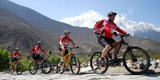
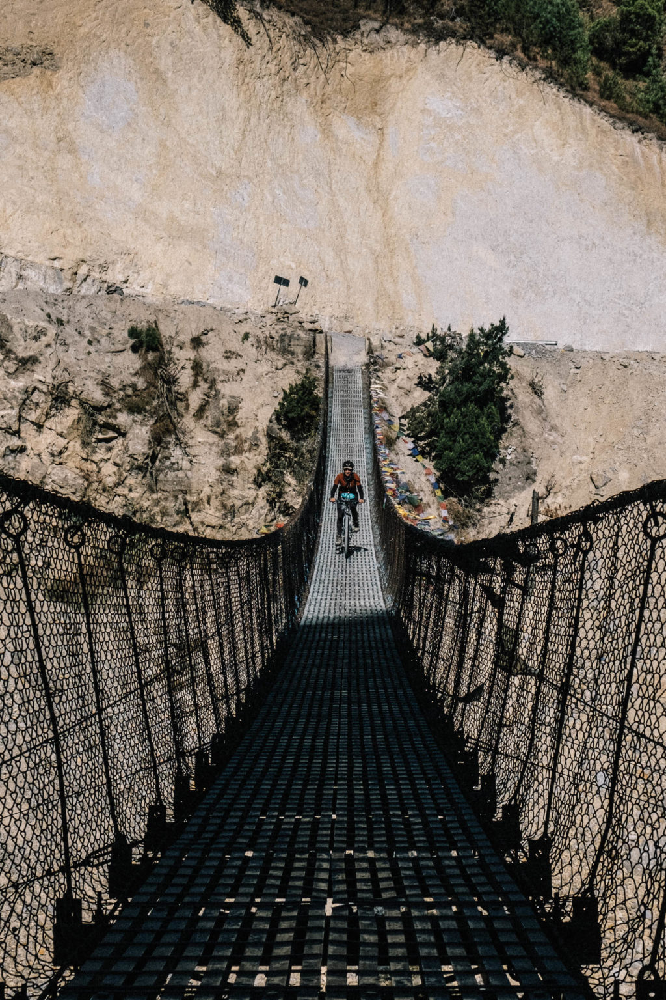

Biking in Nepal

Nepal is a popular destination for mountain biking, offering diverse trails from beginner-friendly to challenging routes. Popular biking areas include the Annapurna Circuit, Upper and Lower Mustang, the Kathmandu Valley, and trails around Pokhara and Chitwan National Park. These routes offer stunning scenery, cultural experiences, and varied terrain, making them suitable for riders of different skill levels.
This trail offers a blend of adventure and culture, passing through villages and viewpoints, says Himalayan Scenery Treks.
Biking Trials in Nepal
 If you are looking to hike or run near Kathmandu, please consider the Valley Rim Trail. There is so much fabulous trail up there! The KVRT is more a concept than an official route – but with the GPS tracks and a good app on your phone to navigate the tracks with – there are hours of fun up there and a wonderful escape from the city.
Total Distance: 155k, Total ascent: 15,006m, Total descent: 14,827m , total change: 29,833m (97,852 ft). Caveats: Note that GPS measurements, especially related to distance and elevation gain, include a ton of error. The best measurement is done with an old fashioned measuring wheel. All of this is a way of saying to take everything here with a grain of salt. These tracks still need to be ‘smoothed’ to reduce measurement error, if anything – they should be over-estimates.
If you are looking to hike or run near Kathmandu, please consider the Valley Rim Trail. There is so much fabulous trail up there! The KVRT is more a concept than an official route – but with the GPS tracks and a good app on your phone to navigate the tracks with – there are hours of fun up there and a wonderful escape from the city.
Total Distance: 155k, Total ascent: 15,006m, Total descent: 14,827m , total change: 29,833m (97,852 ft). Caveats: Note that GPS measurements, especially related to distance and elevation gain, include a ton of error. The best measurement is done with an old fashioned measuring wheel. All of this is a way of saying to take everything here with a grain of salt. These tracks still need to be ‘smoothed’ to reduce measurement error, if anything – they should be over-estimates.
Kvrt biking trial

The Annapurna Circuit mountain biking trail is a challenging and rewarding 230-260 km adventure through the Himalayas, typically taking 10-15 days to complete. The trail passes through diverse terrains, including single tracks, jeep roads, and rocky ascents, with significant elevation gain, including the Thorong La Pass at 5,416 meters.
Although the route is anything but easy, it’s one of the easier mountain treks to ride in terms of logistics. Teahouses serve steaming plates of dal bhat and offer a place to shelter or spend the night, and after resting and refueling on carb loaded meals, you’ll be ready to hit the trail.
Annapurna Circuit Trial